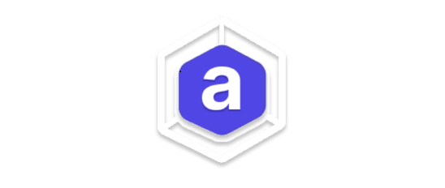

Arkitekt: open-source workflows for smart microscopy
Arkitekt is an open-source middleware designed to integrate and orchestrate existing bioimage applications into interactive, real-time workflows. It supports popular tools like Napari, ImageJ, MicroManager, and deep learning frameworks such as CARE and StarDist. As a distributed system, Arkitekt enables each tool to run on the appropriate hardware—whether a local workstation or a GPU cluster—optimizing performance across various lab environments. It also leverages Docker containers to ensure reproducibility in running these applications.
The system facilitates real-time workflows, enabling “smart microscopy” by synchronizing data analysis and acquisition. Centralized data management simplifies the exploration and analysis of large datasets, helping researchers streamline complex bioimage workflows.
Although Arkitekt is still in an experimental phase and undergoing significant refactoring to enhance usability in its next iteration, it aims to provide a strong, scalable framework for the community to build upon. If you are interested in learning more or want to share your needs for a smarter microscopy platform, visit the website or join our Discord community for updates and discussions.